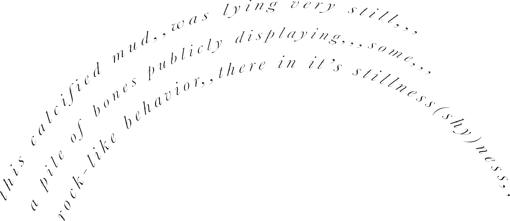
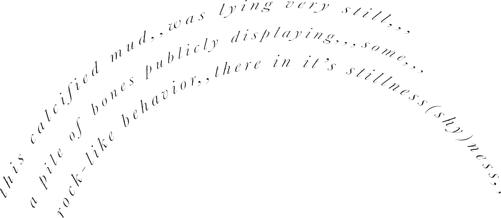

Garthim is happy to present Hushed Inheritance, Tatiana Sky's first solo exhibition at Vasquez Rocks Natural Area in Southern California, USA. The Vasquez Rocks are a 25 million year old phenomenon of desert geology where sedimentary rock is tiled into an alien landscape. Caves and sandstone navels have been eroded from the cliffs by years of earthquakes, rain and wind. Industrious creatures make their dens inside alcoves of sun-warmed rock. Desert lichen is splattered under bronze castings, their ash patinas spotlighted by the energy of the Mojave sun. We hope you enjoy the exhibition.


 

Photography by Justin Ortiz